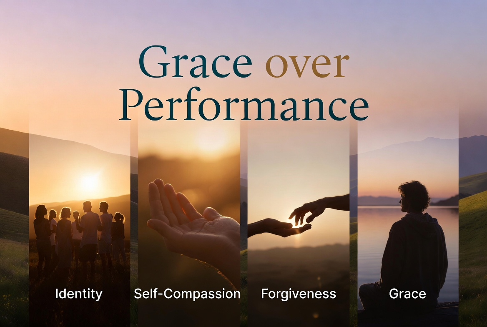

Architecture ofGrace
Most things measure people. This helps you understand them. A free, five-minute reflection for students, families, and educators.
Built for classrooms. Share via link or QR in seconds. No student accounts or logins needed.
Built by a special educator, it’s a framework for building stronger relationships—with yourself and with others—through identity, self-compassion, forgiveness, and grace, at home, at school, and throughout life.
Because growth begins with grace, not performance.
Free·Private·5 minutes·Built by a special educator
How one answer becomes growth
Nothing here is a stand-alone tool. Watch a single honest answer travel through the framework — from a quiet flag to a real next step.
The four pillars
Architecture of Grace is a relationship framework built on four connected pillars.
Four ideas run through every piece of the framework — the check-in, the lessons, the novels, and the conversations.
These four pillars run through the check-in, lessons, novels, and conversations — so a flagged need maps directly to the exact support a student needs.
This is a project about relationships — the one you build with yourself, and the ones you share with each other.
Built on identity, self-compassion, forgiveness, and grace — the ground every healthy relationship stands on.
The Architecture of Grace Ecosystem
Architecture of Grace is more than an assessment or a curriculum. It is a connected ecosystem that helps students, families, educators, and independent adults move from awareness to reflection, conversation, practice, and growth that feeds back into who they are.
Built by a teacher.
Designed for real classrooms.
“The privacy-first, trauma-informed, closed-loop SEL ecosystem — built by a special educator for classrooms that value understanding over measurement.”
Most SEL programs treat emotions like another subject to be tested. Architecture of Grace starts from a different premise: growth begins with grace, not performance.
Created by a special education teacher whose own recovery from traumatic brain injury shaped a framework rooted in compassion rather than compliance, this system is built on four interconnected pillars — Identity, Self-Compassion, Forgiveness, and Grace.
A check-in surfaces a need.
That need maps directly to the exact lesson, novel chapter, or anchor chart.
Growth is measured over time — privately, locally, and without surveillance.
This is a practitioner-refined system currently being piloted with thoughtful schools. It has not yet undergone external reliability and validity testing — and we are transparent about that. What it offers instead is coherence, privacy, and immediate classroom utility.
Why Architecture of Grace stands apart
Understanding, not scoring
We don’t measure students to rank them. We help them (and their teachers) understand what they’re carrying so real growth can begin.
One result → one precise action
Check-in scores don’t just sit in a dashboard. They map directly to the exact lesson, chapter, or anchor chart through the Construct-to-Resource Index.
Nothing leaves the device unless you choose
No accounts. No tracking. No vendor dashboards. Data stays local by default with optional, school-controlled Google Sheets sync only.
Designed in the classroom, not a boardroom
Created by a practicing special educator who has lived the weight of this work. Every feature was built to reduce teacher cognitive load, not increase it.
Why Architecture of Grace Exists

People are often measured long before they are understood.
As a special educator, I spent years working alongside students, families, educators, and caregivers. I saw remarkable people carrying the weight of expectations, labels, mistakes, and the constant pressure to perform. Everyone seemed to be asking how they were doing. Far fewer were asking who they were becoming.
Architecture of Grace grew from a different belief.
Growth is strongest when it begins with identity rather than achievement, self-compassion rather than shame, forgiveness rather than judgment, and grace rather than performance.
The framework was created to help people reflect honestly, strengthen relationships, and engage in meaningful conversations about growth. It is not a behavior program, a diagnosis, or a scorecard. It is a practical way to better understand ourselves and one another.
Today, Architecture of Grace serves students, families, educators, caregivers, teams, and independent adults through reflection tools, conversation guides, and resources designed to foster understanding and connection.
The Universal Check-In is one expression of this work.
The mission is larger:
To create spaces where people are known before they are measured, understood before they are evaluated, and supported as they grow.
Because lasting growth begins not with performance, but with grace.
Two ways to hold a human being
The same moment, read through two very different lenses.
From a quiet moment to real growth
Not a test to pass — a path to walk.
- 1ReflectionA 6th-grader answers, “I keep replaying my mistakes long after they’re over.”
- 2AwarenessIt flags rumination & letting go — a gentle signal, never a label.
- 3ConversationIt opens a two-minute talk: “What’s one mistake you’re still carrying?”
- 4UnderstandingIt maps to Book 2 · The Year of the Inner Critic — the lesson on answering the harsh voice.
- 5GrowthAt the next check-in, that same question scores higher — and the loop begins again.
- 1ReflectionAn educator answers, “By the end of most days, I feel used up.”
- 2AwarenessIt flags low emotional regulation — a burnout signal, read privately.
- 3ConversationA quiet nudge: try a calm tool, and — you can’t pour from an empty cup.
- 4UnderstandingIt maps to the adult companion and the Co-Regulation reminder.
- 5GrowthA week later, the tank reads fuller — and the loop begins again.
- 1ReflectionA class of 24 takes the check-in on their own devices.
- 2AwarenessThe dashboard reads the group: average “worth a check-in,” lowest domain Emotional Regulation.
- 3ConversationThe teacher reads the room and picks one focus for the week.
- 4UnderstandingThe MTSS report maps it to Tier supports and Book 4 lessons.
- 5GrowthBy the next window, the class average rises a band — and the loop begins again.
The check-in is not an assessment. It is a conversation starter. It helps individuals and communities identify areas of strength and areas that may need attention, then provides opportunities for reflection and growth.
Made for everyone in the room
The same four ideas, met where each person actually is.
Students
A private, age-aware way for young people to notice how they’re really doing — beneath the grades and the behavior charts. It gives them language for their inner world, and the quiet reminder that who they are matters more than how they perform.
Families
Shared words for the conversations that matter most at home. Families use it to check in honestly, name what’s hard without blame, and grow closer through understanding rather than pressure.
Educators
For the people who carry a classroom every day. It offers a clearer sense of where a group actually is — and the reminder that your own wellbeing matters too, not just everyone else’s.
Caregivers
For those who hold space for others — parents, counselors, aides, and helpers. It honors the weight they carry and helps them stay grounded, resourced, and gentle with themselves.
Teams
A way for groups and organizations to build trust and reflect together. Teams use it to move from performance toward connection, surfacing what people need before strain becomes burnout.
Independent Adults
A quiet practice for anyone choosing to grow on their own terms. A structured moment to pause, reflect, and extend a little grace inward — no classroom or program required.
For Educators
The classroom view of the framework: the Universal Check-In, the lesson-by-lesson curriculum, anchor charts, and conversation guides — with a private Guide & Library to explore everything before you teach it.
Inside a lesson
Every lesson ships as a small package — anchor charts, scenario cards, worksheets, and drawing activities. Open any sampler below; no code, no sign-up.
For Administration
For school and district leaders: de-identified, class- and school-level trends for MTSS — never individual scores — alongside licensing, privacy, and rollout details.
The Grace Ecosystem — strategic overview →For the Workplace
The same framework, voiced for the adults who hold everyone else — educators, nurses, leaders, caregivers. A private check-in and a 60-second burnout read, with team practices that need no extra meeting.
My name is Jimmy Ramsden. I didn’t come to this work from a boardroom — I came to it from the classroom, where I still teach today as a special educator.
For more than a decade I’ve worked as an Illinois-certified special educator across elementary and junior-high classrooms — in self-contained, resource, and social-behavioral settings — and I hold a Learning Behavior Specialist endorsement for students from preschool through age twenty-two. Along the way I built and ran an elementary Social-Behavioral Learning resource program, where I coach students in the very skills this curriculum is built around: naming what they feel, steadying themselves, and trying again. The Architecture of Grace isn’t a departure from that classroom work — it’s two decades of it, gathered into something I can hand to other teachers.
My journey started at Humboldt State University with a degree in political science. But the real catalyst came in 2006. I was driving up to Oregon for a show — Anticon, the hip-hop collective whose music had been part of my life for as long as I can remember — when a serious car crash left me with a traumatic brain injury and a neurological disability. Rebuilding my life changed how I understand struggle, patience, and grace, and it’s what turned me toward special education and a master’s at Aurora University in Aurora, Illinois. It’s the reason this work isn’t abstract to me.
Anticon never left me. The only tattoos I carry come from them — ants for my family (my sister, my parents, and me) and the name itself. Over the years I came to read it the way I try to teach: anti-con — without lies. Meeting people honestly, as they really are, is the ground everything here is built on.
The Architecture of Grace grew out of a conviction that individuals deserve more than to be measured — they deserve to be understood. Built under The Architecture of Grace Foundation, everything here rests on four core pillars:
- Identity — who a person comes to believe they are.
- Self-Compassion — how a person learns to speak to themselves.
- Forgiveness — moving past mistakes to make room for growth.
- Grace — meeting a person with understanding rather than only judgment.
As a teacher and a father, these are the values I want for my students, my own children — and for anyone willing to do this work.
— Jimmy Ramsden
The Universal Check-In is one practical expression of the Architecture of Grace framework.
Take the Check-InTake a private 60-second read on your own tank, right here.
How full is your tank?
Burnout’s clearest signal is energy, not attitude. Four quick reads on your tank — private, instant, and saved nowhere. This isn’t a clinical burnout score; it’s a quick mirror. If it rings true, the full check-in goes deeper.
Something hard happening right now? Get one practical thing to do this minute.
For teachers
What’s happening right now?
Something just got hard? This isn’t about your week — it’s about right now. Four quick taps, and you’ll get one practical thing to do this minute. Private, instant, saved nowhere.
Who’s checking in?
This is a moment to be understood, not measured. The same four ideas — identity, self-compassion, forgiveness, and grace — the same care, just worded for who’s answering. Choose one to begin.
How are you doing, really?
Take a few quiet minutes for yourself. There are no wrong answers, and what you share helps the people who care about you know how to support you.
A private 4–10 minute reflection · no wrong answers · nothing leaves this device unless you choose.
(School-controlled sync to your Google Sheet is optional and off by default.)
Before you begin. There are no right or wrong answers — just pick what feels most true for you lately, and go with your first instinct.
If a question brings up something you’d like to talk about, you can reach out to a teacher, counselor, parent, or guardian any time.
Some of these questions were shaped with the help of children — so the words would sound a little more like yours, and a little less like ours.
About you
Choose how you want to take it
- 18 items, single-tap response
- Score 0–54, flags who may need support
- Comparable across seasons of life
- Granular frequency (Never → Constantly)
- Intensity rating on 6 highest-signal items
- Three optional written reflections
- Score 0–90 with rich Home View report
How are you doing, really?
A few quiet minutes, just for you. This is a check-in, not a test — and not a diagnosis. There are no wrong answers. It’s a way to notice how you’ve been, and a flag for a conversation if something needs one.
If you’re carrying something heavy right now, you don’t have to carry it alone. In the U.S. you can call or text 988 (the Suicide & Crisis Lifeline), any time, day or night. Reaching out is a strong thing to do.
Before you begin. Just pick what feels most true for you lately, and go with your first instinct.
Your responses aren’t anonymous — they go to the person or team who shared this with you, so someone can follow up with care. If something here brings up a lot, please reach out to someone you trust.
About you
Choose how you want to take it
You can’t co-regulate from an empty cup.
Every helping role runs on the same quiet machinery: a teacher steadying a child who’s come undone, a nurse calming a frightened patient, a manager holding a team through a brutal quarter. None of it works when the person doing the steadying is running on fumes. You cannot help someone else find their footing while you’re losing your own — and this is the part most workplace-wellness programs skip entirely: tending to the helper first.
Regulation is contagious. So is depletion. We start with you.
Voluntary adult check-ins available for staff wellness — no evaluation or surveillance.
Anyone whose job is holding others
The work is whole-person, not job-specific — because regulation doesn’t clock out. If people lean on you, this is for you.
The same check-in — voiced for the adult in the room
Eighteen honest items across three areas: steadying yourself, how you speak to yourself, and showing up for the people around you. Take it quick (~4 minutes) or thorough (~10 minutes). It rests on the four ideas the whole framework is built on.
This is a mirror, not a report.
Honesty only works when it’s safe — so we made it safe. There is no version of this where your manager, HR, or anyone else sees what you said. It’s yours.
- Your answers never leave this device — nothing is transmitted, anywhere.
- No login, no account, no email required to begin.
- No manager and no HR dashboard ever sees a single response.
- Take it as often as you like — it’s a check-in, not an exam.
Pick what feels most true for you lately, and go with your first instinct. When you finish, you get a private report and a few gentle conversation starters — for you alone.
Choose how you want to take it
If you’re carrying something heavy right now, you don’t have to carry it alone. In the U.S. you can call or text 988 (the Suicide & Crisis Lifeline), any time, day or night. Reaching out is a strong thing to do.
Care for the team, without surveilling it
Organizations don’t buy access to anyone’s answers — those stay private, always. What you bring your people is the program and the practice: a shared language for steadying yourself so you can show up for the people you serve. On day one, leadership sees participation, never scores. Real outcome data — anonymized and consent-based — can come later.
Talk to us about your team →Thank you.
Your answers have been saved. A trusted adult will review them to make sure you have the support you need.
Name something true about yourself.
Before you go, tap one or two positive words that describe you today.
—
Carry that word with you today.
How you’re doing
Here’s everything you just shared — and where each piece lives in the books. This is a mirror, not a verdict — a way to be understood, not measured.
This is your personal report. If you checked in on a class computer or through a link your teacher shared, your teacher can see it too — to understand and support you, never to grade you.
Your path from here
A check-in is a beginning, not an ending. Here’s where to go next.
- Check in
- See resultsYou’re here
- Explore resources
- Apply it
- Keep growing
Explore your resources
See the lessons, charts, and novel chapters that match what you just shared.
Put the framework to work
The full K–12 curriculum and the six-book novel series bring this into a classroom or home.
Keep growing
Check in again over time, or use Family Mode to track it together.
A score is a flag for a conversation, never a diagnosis — never a verdict on who you are. It’s a starting point for being understood. Because growth begins with grace, not performance.
Your family’s check-ins
Add each family member once, then check in together a few times a year. Everything stays on this device — see growth over time and print conversation starters.
Check-In Results
Aggregate view across all administrations
How the dashboard works
This is your teacher view — class trends and each student’s report. When someone finishes a check-in, they see their own personal report right away, and it comes to you here when it’s on a class computer or your shared link. Here’s the whole flow at a glance — a check-in, not an exam.
-
1
Share the check-inOpen Distribute to create a link or QR code for your class. Students open it on their own device — no logins to set up.
-
2
Students check in on their ownEach student answers their own check-in. Their results sync back only through the link or QR code you shared — nothing else travels with it.
-
3
Read the classOverview sums up the whole group; Class trends shows which areas to focus on next. Use these to plan your teaching, not to grade.
-
4
Open a student’s reportGo to Student view to read any student’s full check-in — their answers, their words, and conversation starters. Use Open report or Export PDF for one student at a time.
New here? How to read this dashboard
Each student’s report shows three areas, color-coded so you can see at a glance where to focus:
- Green — Doing well. Keep affirming what’s working.
- Amber — Worth a check-in. A good moment for a gentle conversation.
- Red — Needs support. Sit with them; the Resource Index maps the next lesson, story, or tool.
A score is a flag for a conversation — never a diagnosis, and never a verdict on who a student is. New to introducing this? Tap “How to introduce this (60 sec)” above for the word-for-word script.
Each area is color-coded so you can see where to focus at a glance:
What the numbers mean: each score runs 0–100 and sums up how a group answered — higher is steadier. They’re de-identified signals for where to focus next, not grades or rankings.
A score is a flag for a conversation — never a diagnosis or a verdict on who a student is.
How everyone’s doing
Domain averages
Class trends
Individual responses
Student reports
Family & adult reports
Growth across windows
Classroom Link Generator
Syncing & distribution
Affects only this device. Students who open a generated link sync regardless of this setting.
See results from other devices
Your data on this device
Read live from this browser. Nothing here is sent anywhere — download a backup first, then delete if you need to.
Class-summary exports
Where your data lives
Responses are saved privately in this browser for this session only, on this computer. The exports above are class-level summaries — they never include student names, individual scores, or written responses.
Architecture of Grace
How Architecture of Grace works
Architecture of Grace is not a curriculum, an assessment, and a library sitting side by side — it is one connected framework. The clearest way to see that is to follow a single honest answer all the way from a quiet check-in to real growth.
Whether you are a family at the kitchen table, an educator in one classroom, an administrator, or a district leader — the path below is the same. Only the scale changes.
How Architecture of Grace is different
Not a knock on other tools — just where this one stands apart from most SEL programs.
What Is Architecture of Grace?
In plain terms — it’s a developmental, secular SEL framework built around a private, bilingual check-in. It brings together honest self-reflection, universal screening, conversation starters, companion novels, and a K–adult resource library into one connected system — for students, adults, and families alike.
Architecture of Grace is a human-development framework and an intuitive digital check-in that helps people understand themselves, strengthen relationships, and navigate life’s challenges with resilience, responsibility, and hope. It’s a check-in, not an exam.
The check-in runs two ways — a quick rapid mode, or a fuller depth mode with intensity follow-ups and written reflections — and ends with a personal, per-person Home View report. Everything is bilingual, in English and Spanish, and MTSS-ready, surfacing gentle flags rather than diagnoses.
Around the check-in sits a wider ecosystem: conversation starters, companion novels, and a K–adult resource library that connects each result to a practical next step — bridging deep personal development and daily practice.
The founder, and the why beneath the work
My name is Jimmy Ramsden. I didn’t come to this work from a boardroom — I came to it from the classroom, where I still teach today as a special educator.
For more than a decade I’ve worked as an Illinois-certified special educator across elementary and junior-high classrooms — in self-contained, resource, and social-behavioral settings — and I hold a Learning Behavior Specialist endorsement for students from preschool through age twenty-two. Along the way I built and ran an elementary Social-Behavioral Learning resource program, where I coach students in the very skills this curriculum is built around: naming what they feel, steadying themselves, and trying again. The Architecture of Grace isn’t a departure from that classroom work — it’s two decades of it, gathered into something I can hand to other teachers.
My journey started at Humboldt State University with a degree in political science. But the real catalyst came in 2006. I was driving up to Oregon for a show — Anticon, the hip-hop collective whose music had been part of my life for as long as I can remember — when a serious car crash left me with a traumatic brain injury and a neurological disability. Rebuilding my life changed how I understand struggle, patience, and grace, and it’s what turned me toward special education and a master’s at Aurora University in Aurora, Illinois. It’s the reason this work isn’t abstract to me.
Anticon never left me. The only tattoos I carry come from them — ants for my family (my sister, my parents, and me) and the name itself. Over the years I came to read it the way I try to teach: anti-con — without lies. Meeting people honestly, as they really are, is the ground everything here is built on.
The Architecture of Grace grew out of a conviction that individuals deserve more than to be measured — they deserve to be understood. Built under The Architecture of Grace Foundation, everything here rests on four core pillars:
As a teacher and a father, these are the values I want for my students, my own children — and for anyone willing to do this work.
This work is in its early stages. The check-in is a pilot — a score is a flag for a conversation, never a diagnosis — and the curriculum is a framework I’m actively proving. I’d rather be honest about that than oversell it.
If you’d like to try it or share your thoughts, please reach out. Theopus77@yahoo.com
— Jimmy Ramsden
One Living Ecosystem
A curriculum becomes an ecosystem when it can teach, measure what it taught, and use what it learns to teach better. Hover any piece to see what it does — tap it to go there.
The honest frame. The check-in is built from a coherent framework, which makes it internally sound — but it has not yet been through external reliability and validity testing. For a pilot, that is appropriate and disclosed. Until then, every score is a flag, not a diagnosis — and the curriculum, not the number, is the intervention.
How the full library works
One result becomes one targeted next step — and then a sustained one. This is the loop that ties measuring, flagging, and teaching into a single system.
A check-in surfaces a low domain — say, Self-Compassion & Growth Mindset — for one student or a whole group.
The result raises a flag on the counselor follow-up view — who to sit with, and where to focus — without ever issuing a diagnosis.
The Resource Index maps that flag straight to the book, chapter, lesson, and anchor chart that teach the skill — so the score leads to instruction.
People are often measured before they are understood. Architecture of Grace offers another way — and everything that follows serves one belief: that growth begins with grace, not performance.
How a check-in becomes support
Every piece hands off to the next — a check-in becomes a conversation, and a conversation becomes the right support.
That’s the path in a school. On their own, an adult takes the very same check-in privately — the personal report and conversation starters are theirs alone. This is for every age, not only the classroom.
Five ways in, one framework
The same eighteen items and the same care, worded for whoever is answering. Each path is already built into this file — choose the door that fits.
What this platform includes
Every piece below is built into this one file or its library — not a roadmap, but what ships today.
If you lead a building or a district, here is the operational picture — screening, tiering, and follow-through in one tool you host yourself.
Leadership sees only aggregate trends — never individual student responses.
Low-effort rollout: Start with one class or grade band. Scale across buildings using shared links and your own Google Sheets.
District scale: License available via purchase order for multi-building use.
SEL coordinators can use demo data to train staff quickly before going live with real students.
Privacy & legal documents
Everything your IT, privacy, and legal teams need to evaluate the check-in — written in plain language for busy administrators. All are PDFs you can download, share, and review.
Data Privacy Agreement (DPA)
A ready-to-edit DPA modeled on the SDPC national template — a starting draft for your counsel, covering FERPA, COPPA, and PPRA.
Download PDFIT Deployment Guide
Step-by-step setup for your IT team, including the optional Google Sheets sync script. The data lives in your Google, under your control — no servers of ours.
Download PDFData & Privacy Statement
A plain-language summary of what is collected, where it lives, and the on-device-by-default design — the quick read for a privacy review.
Download PDFThe DPA is a draft template for discussion, not legal advice; have it reviewed by qualified counsel for your LEA and jurisdiction before signing.
A universal social-emotional learning (SEL) self-report check-in built directly from the Architecture of Grace curriculum. It is brief, universally applicable, and designed to be taken at regular check-in points across the year — each season at school, or anytime at home — to track baseline, growth, and risk over time. It measures three domains — Emotional Regulation & Well-Being, Self-Compassion & Growth Mindset, and Social Competency & Repair — with six items each, eighteen total.
Quick — the standard school check-in. A 4-point frequency scale (Never / Sometimes / Often / Almost Always), about four minutes. Use this for whole-school administration where you need to triage many students quickly and compare across schools and windows.
Thorough — the full instrument. A 6-point frequency scale (Never / Rarely / Sometimes / Often / Very Often / Constantly), plus intensity follow-ups on the highest-signal items, plus three short written reflections. About ten minutes. Use this for home, mentor, or counselor settings where you want to actually understand and act, not just triage.
Every item is scored so that a higher number always means a healthier response. Reverse-scored items (the risk indicators) are flipped automatically before scoring. In Thorough mode, intensity ratings reduce an item’s score when a difficulty is reported as high-impact. Both modes are normalized to a 0–100 composite so any two responses can be compared directly, regardless of mode.
Tier cut points (normalized composite, 0–100):
Needs support · 0–49 Consider follow-up within one week; in a school, a Tier 3 review.
Worth a check-in · 50–74 Targeted support; reassess at the next window.
Doing well · 75–100 Continue universal support.
The trusted-adult item (Item 18) is also tracked on its own. A response of Never or Rarely/Sometimes raises a flag regardless of the composite score, because connection to a trusted adult is protective on its own.
The results dashboard opens directly — there is no longer an access code. Privacy travels with the link instead: results sync to your school’s sheet only when someone opens a private link you generate under Distribute, and that link never carries the sheet address or any passcode. Open the dashboard with nothing synced and it shows only the check-ins taken on this device (or demo data), so simply opening it never exposes anyone’s private results. The device itself stays the thing to protect — on a shared computer, use the Delete control on the Privacy page when you’re done.
At home or 1:1: Open this file in any browser. Each person enters a name or ID, their grade or age band, and the window. Choose Thorough mode. They answer privately. When everyone is done, come to this dashboard, open Home View, and select each person.
With a group or several people: Each person uses their own computer (or their own browser). Responses stay private on each device — nothing is shared between people automatically. If several people share one computer, each enters their own name, and the dashboard keeps their records labeled and separate.
Sharing the link: You can host this one file on a free static host (such as Netlify) to get a link anyone can open on a computer or iPad. Each person who opens it still keeps their own private data on their own device.
Home View shows every item, the actual answer color-coded from green (healthy) to deep orange (concerning), the intensity badge where one was recorded, and any written reflections in the person’s own words. At the bottom is a conversation guide: the items that scored lowest, rewritten as gentle questions you can ask, plus a pointer to the curriculum book that addresses that domain. Do not ask all of them at once. Open one door at a time.
A flag is never a dead end. The conversation guide points from each low-scoring item to the exact lesson in the curriculum that addresses it — flag → the right lesson. The number tells you where to begin; the curriculum is the intervention.
Those lessons aren’t a separate purchase. A district license includes the full K–12 program and the companion novels; families can buy individual pieces à la carte for home.
By default, all responses are stored only in this browser, on this computer, and nothing is sent anywhere — unless a school turns on syncing to its own Google Sheet (see section 8). The reflections and the written word are saved with the response so a trusted adult can read them — appropriate for home and counselor use. If you ever use this with students in a school setting, treat the responses as part of the student record under FERPA and limit access accordingly.
If anything in a response or a follow-up conversation suggests abuse, neglect, or imminent self-harm, the check-in is not the final word — follow your mandatory reporting protocol.
By default, a check-in stays on the device that took it. A school can choose to pool its results into its own Google Sheet, so a counselor sees the whole school in one place. With that turned on, a completed check-in is saved on the device and sent to the school’s own Google Sheet — never to us, and never through any server we run. The sheet builds a simple dashboard on its own (totals, average score, how many named no trusted adult). Setup takes about ten minutes and is covered in the “Connecting a School Sheet” guide; the data lives in the school’s Google, under the school’s control.
This check-in is a flag, not a diagnosis. A low score in one window can be a high score in the next — that is the entire reason it is repeated across the year. The curriculum is the intervention; the check-in just tells you where to begin.
Professional Development
The adult-facing strand that already runs through every book’s table of contents — gathered here in one place. Each thread supports the grown-ups first, so the framework holds for the students they carry.
Staff Wellness
Protect the people who hold everyone else. A private adult check-in, a 60-second burnout read, and practices a team can run without adding another meeting.
Trauma-Informed Reflection
Recognize stress responses in yourself and your students, and respond from regulation rather than reaction — the Window of Tolerance, applied to the adults first.
Adult SEL
The same four pillars — identity, self-compassion, forgiveness, and grace — translated for grown-ups, so staff practice the skills before they ever teach them.
Building a Culture of Grace
Move grace from a poster to a practice: repair routines, charitable reading, and the difficult-vs-unsafe line that keep a staff culture healthy under pressure.
Implementation Training
Onboarding for the whole system — the check-in, the dashboard, family and adult modes — with a mid-year session tied to your curriculum calendar.
Wellbeing tracks — for the adults, by role
The five threads above prepare staff to deliver the work. These two turn it toward the adult as a person — one for the staff who carry it, one for the leaders who set the culture around it. Assembled from material already in Books 1–5. English at launch.
The Sustainable Educator
The Internal Critic and the Compassionate Witness, the Friend Test, the line between depletion and weakness — the same constructs your students learn, redirected toward the people teaching them. Trauma-informed, research-grounded, secular.
- 1The question, asked of youThe last mistake you made at work — is the feeling about what you did, or about who you are? The shame-and-guilt distinction, run on the adult first.
- 2The Critic and the Witness — yoursThe Friend Test, turned inward. The empathy you already extend to others, redirected toward yourself.
- 3The Sustainable Educator — from Book 5 · The Sustainable SoulDepletion patterns, portable self-care across body / mind / spirit, and one honest test: can I run on this for twenty years? The heart of the module.
- 4Reflection as personal practice — from §5.2 Block 5 · §5.3The reflection box was always your drain. Here it’s the work — private, never collected, modeled first by the facilitator with a real response.
- 5Your support webYou taught your students that asking for support is wisdom, not weakness. Map your own. Name one thing you’ve been carrying that you haven’t said aloud.
Who facilitates
An external facilitator, or a non-evaluating internal role — counselor or coach.
Never the person who evaluates the room.
If something surfaces
Adult referral path: EAP, HR, crisis lines — the grown-up version of the student counselor route.
Participation is voluntary by design.
The Sustainable Leader
A principal sets the staff culture mostly without meaning to, evaluates the people in the room, and depletes with no one above holding them. This module names that bind — and gives a leader the moves that actually build a culture of grace, including for themselves.
- 1The culture you set without meaning to — from Book 4 · grace vs. performance culturePsychological safety (Edmondson), and the leadership case with the research behind it: staff wellbeing predicts student outcomes.
- 2The evaluator problem, namedWhy you can’t be the one running staff wellness — and what your role is instead: hand facilitation to a non-evaluating role, keep it voluntary, model your own reflection without surveilling anyone else’s.
- 3The difficult-vs-unsafe line, for adults — from Building a Culture of GraceWhen a struggling staff member is a support question, and when it has become an HR or safety one. Knowing the difference protects everyone.
- 4Repair as routineMoving grace from a poster to a practice your staff can see you use — charitable reading, and visible repair on the days you get it wrong.
- 5Who holds the holderThe depletion pattern applies to you too. Your own peer or coach support, and the non-negotiables you will not trade away under pressure.
Your role
Protect the conditions for the work. Do not facilitate it yourself.
Model the practice; never police it.
Your own support
A peer or coach outside your reporting line, plus EAP.
This is not optional for you either.
Construct-to-Resource Index
This is not a search page — it is the map of how everything connects. Every assessment item, lesson, story, worksheet, anchor chart, and scenario card is linked here. Start with a challenge, a skill, or a check-in result, and follow it straight through the Architecture of Grace framework.
See how one answer becomes growth →When a check-in flags a low domain or a specific item, find the matching construct below. Each one points you to the exact lesson, anchor chart, and activity in every grade band — in both the School Curriculum and the matching Home Edition — and, under In the novels, the specific book and chapter where that same idea appears as story. (References are by chapter, which stay accurate across print and digital formats, rather than by page.) Both the Quick and Thorough check-ins measure the same items, so a result from either mode maps back to these same lessons, sections, and chapters.
Voices
Teachers, families, adults, students, and more — share a few words about your experience. Posts appear on the wall below for everyone to read.
Comments you post are shown publicly on this page.
Please don’t include emails, phone numbers, links, or last names — posts with contact details are blocked automatically to keep the wall safe.
Library
Browse and download every free preview, sample lesson, and resource pack — no sign-up, no code. To buy the novels, home editions, and the full curriculum, visit the Store.
The internal-critic lesson, K–12 — from Grumpy Gus in kindergarten to forgiving the younger self at graduation. Anchor charts, worksheets, scenario cards, and drawing activities, straight from the curriculum.
↗ Open · PDFThe identity lesson, K–12 — the K–2 Identity Web growing into the Mask & Mirror, the Curated Self, and the Threshold of adulthood. One question, every grade band.
↗ Open · PDFThe teacher’s master map, K–12 — every load-bearing scene crosswalked to a lesson, an anchor chart, and a concrete neuro-affirming adjustment. Universal edition; no faith framework required.
↗ Open · PDFFree to read & download
Every chapter preview and sample lesson, in one place — no code, no purchase, no sign-up. Open or download any of them.
The Store
Shop the novels, curriculum, anchor charts, worksheets & card decks — for home or school.
Bring the whole K–12 ecosystem to your school or district under a site or district license — typically billed by purchase order and priced per building or per student. We’ll send a quote and help you set it up.
Request a pilot or district licensing discussion →Free previews are always open in the Library — read before you buy. When you’re ready, take it home:
-
$14.99 BuyThe companion novel · Book OneThe story the whole framework grows from. Paperback or eBook.
-
$9.99 BuyHome edition · charts & cardsPrint-at-home anchor charts and scenario cards for the kitchen table.
-
$49 BuyFamily bundle · all five booksBest valueEvery novel, chart, and card deck for home, in one pack.
Home-schooling, or want a set for several kids? Ask us →
Browse everything
Free previews download instantly. Everything else is part of the full program — license it for a school, or buy individual pieces for home. Open a category to explore.
Your privacy, in plain language
No account. No tracking. Your check-ins stay on the device you took them on — tap any section below to read more.
Every check-in you complete — your answers, the follow-up intensities, and any written reflections — is saved in this browser, on this one device. There is no account, no login, and no email needed to begin. We do not run a server that holds your responses, and we never receive a copy.
We would rather tell you the exceptions than pretend there are none. Your responses leave this device only in these cases:
- A school turns on sync. If your school enables it, a completed check-in is also sent to the school’s own Google Sheet — under the school’s control, never to The Architecture of Grace Foundation, and never through a server we run.
- Someone shared a check-in with you. If a team or organization sent you an adult check-in and asked to follow up, your responses go to that team. You are told this on the screen, before you begin.
- You post to the community wall. If you choose to leave a comment on our public wall of experiences, that message is published; your name appears only if you type one. Your check-in answers are never part of this.
Outside of those, nothing is transmitted, anywhere.
- No advertising trackers, and no third-party analytics following you.
- No selling or sharing of your data — ever.
- No quiet profile built about you across visits.
- No manager, HR, or leadership dashboard ever sees an individual’s answers.
Because your answers stay on your device and are never transmitted, there is nothing in transit for anyone to intercept. The protection that matters most, then, is the device itself: anyone who can unlock this device and open this browser could open your saved check-ins.
So use this on a device you trust — and on a shared or public computer, use the Delete button below when you are done. We say this plainly on purpose: a check-in only works when you can trust exactly what it does with what you tell it.
When this is used with students, treat each response as part of the student record under FERPA, and limit access accordingly. And remember: if anything in a response or a follow-up conversation suggests abuse, neglect, or imminent self-harm, the check-in is not the final word — follow your mandatory reporting protocol.
Calm & Regulation Tools
Tap a tool to begin. Each one takes 60–90 seconds.
Regulate yourself first — your calm is the intervention
Everyday questions that get past “how was your day?”
Tell us how your body feels — get the right tool
Animated breath guide
Box 4·4·4·4 or 4·7·8 vagal
Breathe in every color!
Trace your hand, breath by breath
Timed shake-out sequence
Fun animal poses
Tap a rhythm to steady your heart
Keep the soft ball in play
Catch the falling stars
Guide it to the dots
Step-through sensory anchor
Guided visualization
Progressive muscle release
Butterfly hug guide
Vagus nerve reset guide
Shake & watch it settle
Flip the inner critic into a kind coach
Name it to tame it
Tap a feeling, hear it named
Pick an instrument & play — every note's in tune
Make beats & scratch the record
One-page parent printable (PDF)
DownloadOne-page teacher printable (PDF)
DownloadBuild a communication sequence
PECS Cards
Tap a card to add it to your sequence. Build your message, then share it.
Your calm & regulation tools
Tap a tool to begin. Each one takes about a minute. There’s no wrong one — pick what feels right.
If things feel too big, these can help for now — and please tell a grown-up you trust. You don’t have to handle it alone. 💛